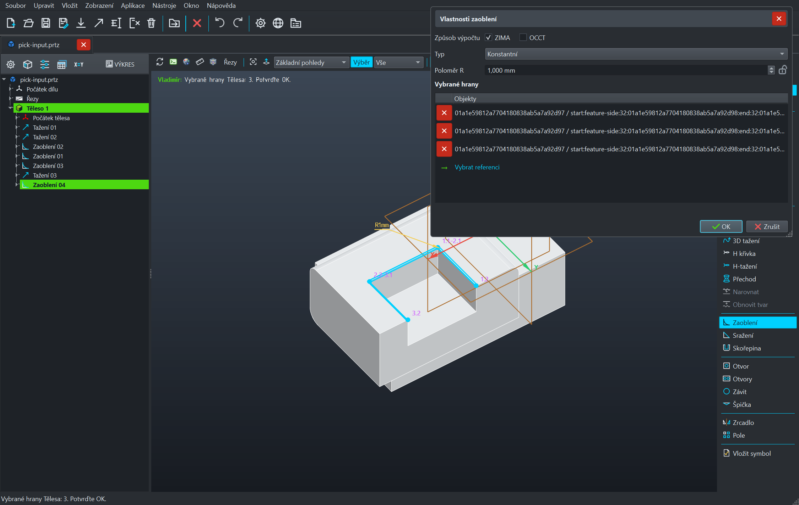
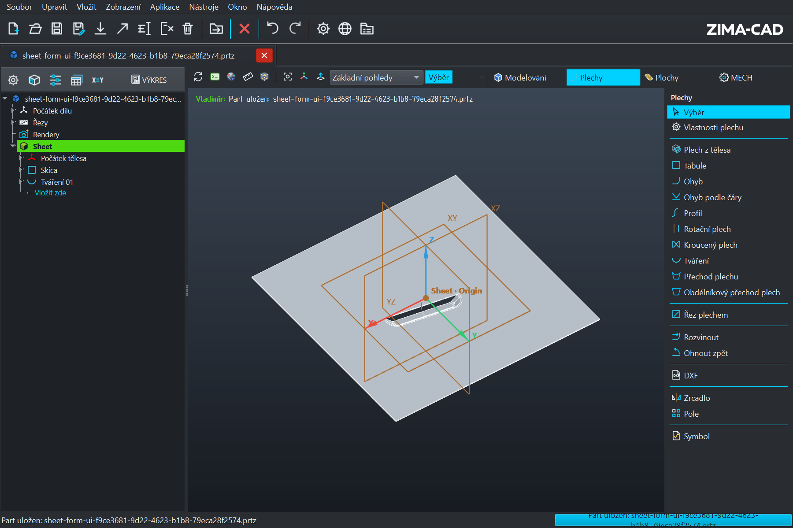
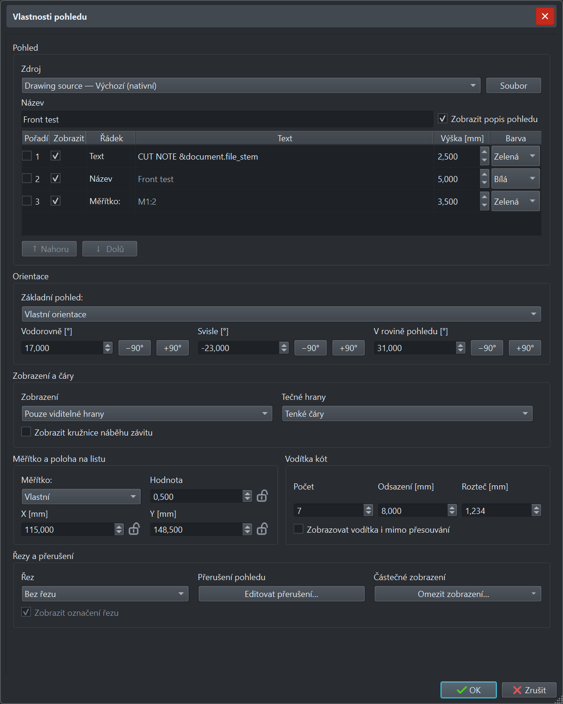

ZIMA-CAD / Anleitungen
Finden Sie den nächsten Schritt.
Bildanleitungen zu einzelnen Werkzeugen. Dieselben Anleitungen im Web und direkt in ZIMA-CAD.
Der Anleitungstext ist auf Englisch.
 Erste SchritteAnleitung öffnen
Erste SchritteAnleitung öffnen SkizzeAnleitung öffnen
SkizzeAnleitung öffnen Extrusion und RotationAnleitung öffnen
Extrusion und RotationAnleitung öffnen
Verrundung und FaseAnleitung öffnen ProfilführungAnleitung öffnen
ProfilführungAnleitung öffnen
BlechbearbeitungAnleitung öffnen BaugruppenAnleitung öffnen
BaugruppenAnleitung öffnen
ZeichnungenAnleitung öffnen FEMAnleitung öffnen
FEMAnleitung öffnen RenderingAnleitung öffnen
RenderingAnleitung öffnen CAMAnleitung öffnen
CAMAnleitung öffnenKeine passende Anleitung gefunden.